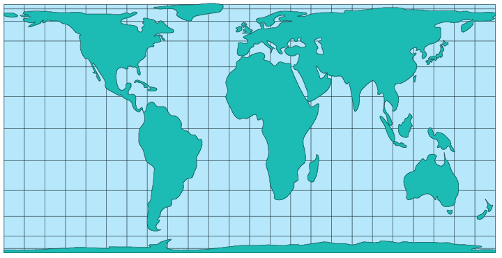

For cylindrical projections, only one standard parallel is specified. The other standard parallel is the same latitude with the opposite sign. For this projection, the standard parallel is by definition fixed at 37º24'.
Meridians: Equally spaced straight parallel lines.
Parallels: Unequally spaced straight parallel lines, perpendicular to the meridians. Spacing is closest near the poles.
Poles: Straight lines equal in length to the Equator.
Symmetry: About any meridian or the Equator.
*Usage information source:
"Trystan Edwards Cylindrical Projection." The MathWorks, Inc.. 20 May. 2005 http://www.mathworks.com/access/helpdesk/help/toolbox/map/ trystanedwardscylindricalprojection.html